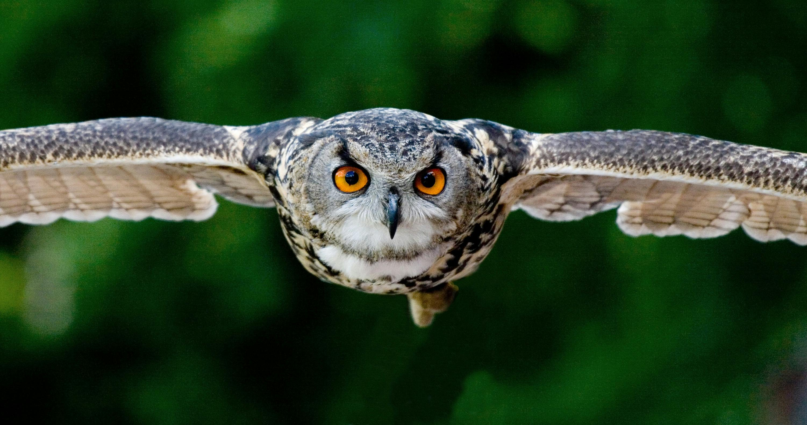

Our Work

Lion
Lions, often referred to as the "king of the jungle," are one of the most iconic and
majestic animals on the planet.

Rhinoceroses
Rhinoceroses or rhinos are large herbivorous mammals known for their thick skin and
distinctive horns.

Testudines
Turtles are reptiles of the order Testudines best known for their bony protective
shell consisting of an upper portion lower portion (plastron), and an interconnecting
region (known as the bridge).

Owl
Most owls are active at night, allowing them to hunt for prey under the cover of
darkness.: Their large eyes are adapted for low-light conditions, giving them
excellent night vision. They can turn their heads up to 270 degrees.

Kingfishers
Kingfishers are generally brightly colored birds that often fish for their food.
There are about 90 kinds of kingfisher throughout the world Kingfishers have plump
bodies that are about 4 to 18 inches long.